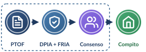
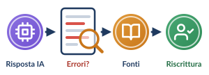

Il lavoro a casa esce dalla rete protetta della scuolaServono garanzie per la riservatezza dei minori e una consegna che alleni il pensiero critico. D.M. 166/2025 · L. 132/2025 · GDPR · AI Act


1
D.M. 166/2025, par. 3.3 e 4.1 · L. 132/2025
Prima la cornice d’istituto
- Il docente non assegna in autonomia: il compito rientra nel piano di adozione (Fasi 1 e 2) e nel PTOF deliberato dagli organi collegiali.
- DPIA + FRIA preventive, estese ai rischi del trattamento domestico dei dati di minori.
- Consenso dei genitori sotto i 14 anni (L. 132/2025, art. 4, c. 4; art. 8 GDPR).
- Opt-out dall’addestramento dei modelli, senza limitazioni d’accesso né penalizzazioni nella valutazione.
2
GDPR, artt. 5, 9, 28 · D.M. 166/2025, par. 3.2
Niente dati personali nei prompt
- Minimizzazione: vietati nome, scuola, indirizzo, nomi di compagni o docenti, dati particolari.
- Ambienti d’istituto protetti: contratto art. 28, niente profilazione, Zero Data Retention, nessun riuso per l’addestramento.
- Formulazione astratta, in terza persona o per ruoli:
No ·
Sì ·
Sono Marco della 2B e mi serve la mappa per domani…
Sì ·
Agisci come un tutor di geografia e forniscimi uno schema sui fiumi italiani…
3
AI Act, cons. 56 e art. 14 · D.M. 166/2025
Pensiero critico, non copia-incolla
- Consegna rovesciata: analizzare la risposta dell’IA e scovarne le «allucinazioni».
- Valutare le fonti (DigComp 2.2, 1.2): dubitare della neutralità, riconoscere i bias.
- Dichiarazione di trasparenza: prompt usati, risposte ottenute, interventi personali.
Esempio di consegna
Chiedi al chatbot un riassunto sul periodo storico X; trova almeno due inesattezze confrontandolo con il manuale; riscrivi la versione corretta con le citazioni.